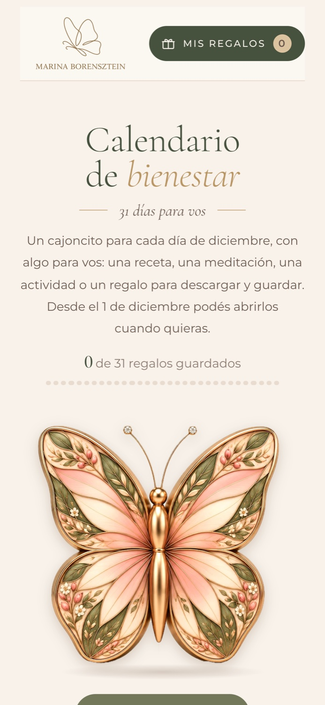
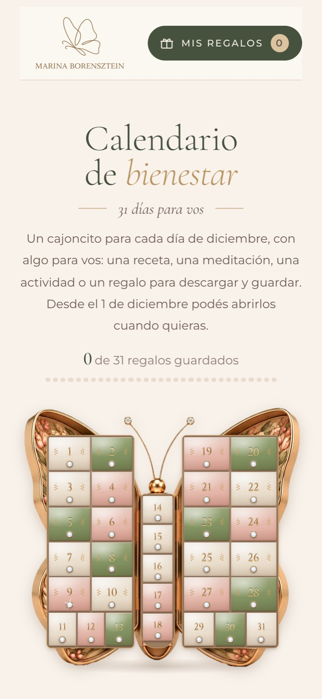
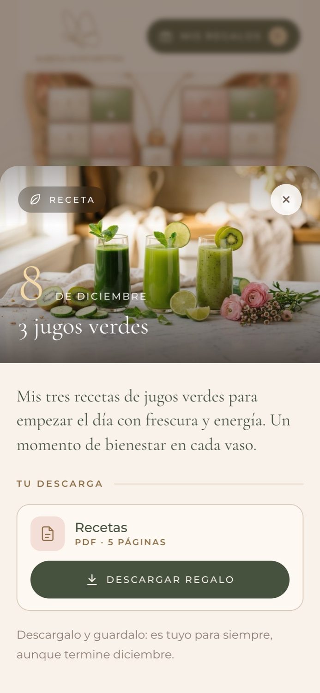
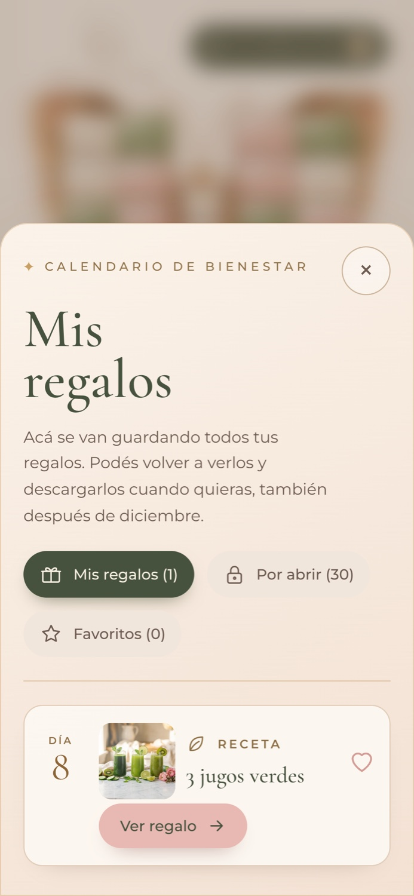
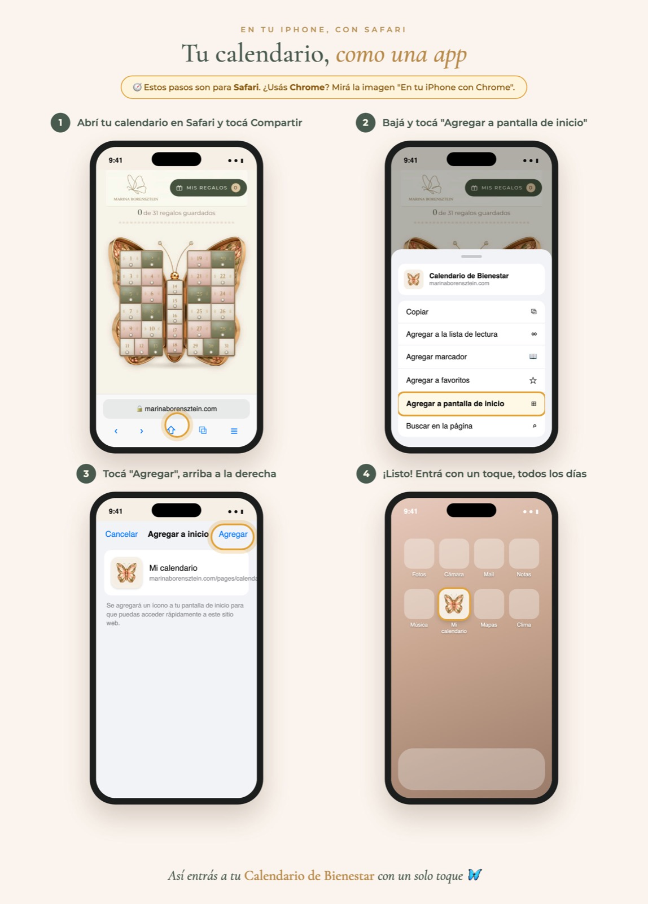

Caso de estudio · A la venta
Un calendario de adviento
que no se puede tocar
Una experiencia digital de 31 días para la comunidad de Marina Borensztein: un cajoncito por día de diciembre con recetas, meditaciones, actividades y regalos para descargar.




El desafío
Que se vea lindo era fácil. Que funcione para todas, no tanto.
La comunidad está formada en su mayoría por mujeres de más de 45 años que no siempre se llevan bien con la tecnología. Lo veo todos los días desde mi rol de coordinación: muchas de las consultas que recibo son de usuarias que no encuentran cómo entrar o dónde quedó un contenido.
Usuarias reales
Distintos niveles de comodidad con la tecnología, casi siempre desde el celular.
Sin app
Tenía que vivir dentro de la tienda Shopify, sin descargar nada.
Acceso por compra
Solo entra quien lo compró o lo recibió de regalo.
31 contenidos
Fotos, PDF y videos que tienen que poder encontrarse todo el mes.
Decisiones de diseño
Cuatro decisiones que más me importaron
1 · Una metáfora que se entiende sola
Una mariposa joyero con 31 cajoncitos. Nadie necesita que le expliquen qué hacer: abrís el cajón del día.
Cada tipo de contenido tiene su color, para saber qué hay adentro antes de abrir.
2 · Cada cajón, una sola acción
Al abrirlo ves qué es, de qué día es y para qué sirve. Hay un solo botón protagonista: Descargar regalo.
Menos opciones en pantalla significa menos dudas, sobre todo para quien no navega seguido.
3 · Que nada se pierda en la bandeja de entrada
"Mis regalos" junta todo lo que ya abriste y está siempre visible arriba, con un contador.
Tiene tres vistas: abiertos, por abrir y favoritos. Nadie tiene que buscar el mail del día 3 para volver a una receta.
4 · "Agregalo a tu pantalla" no es igual en todos los celulares
Para que se sienta como una app, armé una guía en 4 versiones: Android, iPhone con Safari (diseño viejo y nuevo) e iPhone con Chrome.
Las cuatro llegan en el mail de bienvenida, así cada usuaria ve solo los pasos de su celular.

El proceso
Más de 15 versiones hasta llegar a la final
Cada versión respondió a una pregunta concreta: ¿se entiende sin explicación?, ¿se ve como un regalo?, ¿la clienta lo siente propio?
- v2Una caja verde con 31 casilleros. Funcionaba, pero no emocionaba.
- v3Aparece la mariposa, el símbolo de la marca.
- v6Prueba con una lista simple: más clara, pero perdía la sensación de regalo.
- v8–v9Realismo y brillo: el joyero toma forma.
- v10Regalos reales, con una foto para cada día.
- v14–v15Feedback de la clienta: colores más vivos y más brillo.
- FinalA la venta en la tienda de Marina Borensztein.
Implementación
Lo implementé yo misma
Implementé el calendario en HTML, CSS, JavaScript y Liquid dentro del tema de la tienda, y resolví el recorrido completo:
- Compra y acceso con la cuenta de la tienda.
- Apertura diaria y sección "Mis regalos".
- Flujo de regalo: tarjeta de regalo, mail personalizado y canje.
- Mail de bienvenida con la guía para cada tipo de celular.
Lo que aprendí
El mejor diseño es el que la usuaria no tiene que pensar. Y para saber qué no tiene que pensar, hay que verla usarlo.